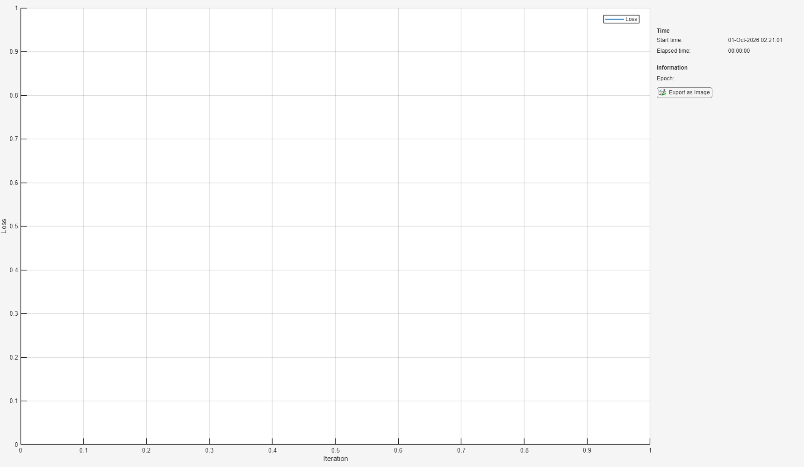
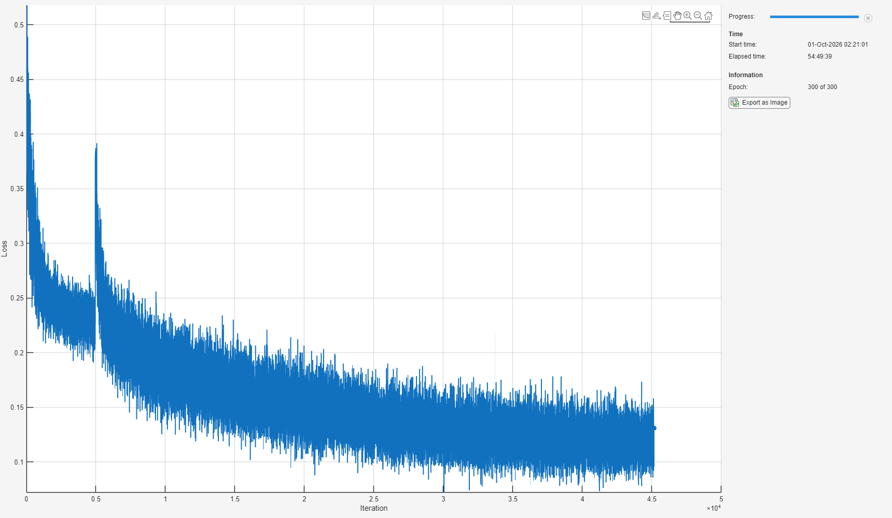
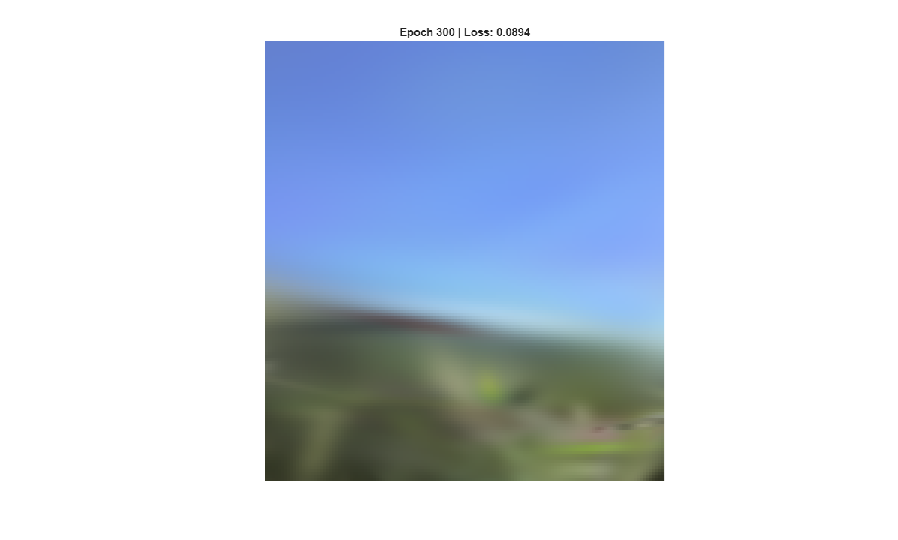
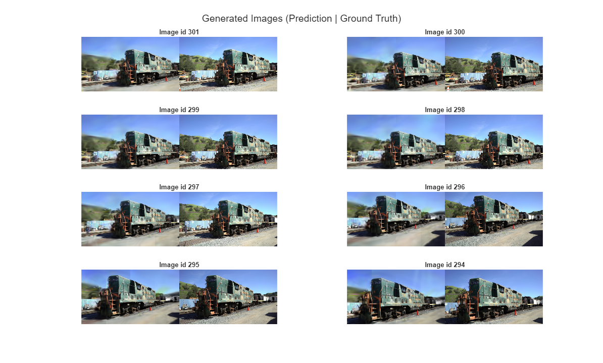

Train 3D Gaussian Splatting (3DGS)
This example shows how-to train and generate 2D images using a minimal implementation of 3D Gaussian splatting.
Image Loading Design: Images are loaded as a blockedImageDatastore (ColmapData.images); each read() returns one fixed-size block (blockSize + 2*overlap), not a full image. Camera info is repeated once per block with cx/cy shifted to the block's local origin, so combine(obj.data.images, obj.data.cameras) still gives strict 1-to-1 correspondence. blockSize defaults to GaussianSplatter.autoSelectBlockSize(), which picks the size (per dimension, in [64, 160]) that minimizes total partial-block zero-padding summed over both resolution levels.
GPU-Vectorized Rendering: Rasterization no longer loops per-Gaussian or per-batch-element: - projectGaussiansWithCulling processes all Gaussians x all blocks in the batch as [N x B] arrays in one pass (camera transform, projection, Sigma_2D via an elementwise J*Sigma*J^T, depth sort), scattering results into persistent buffers by pure indexing. - rasterizeToGPU composites depth-sorted Gaussians in vectorized chunks per tile (fused [H' x W' x K] alpha maps, cumprod transmittance, one image write per tile), with a per-chunk (not per-Gaussian) early-termination check once a tile saturates. Because the L1/SSIM loss is computed directly on this.image/this.image_gt (now block-sized), the loss is automatically scoped to the block instead of the full image — increasing miniBatchSize below now simply increases the number of blocks processed per training step.
Multi-Resolution Schedule: Training starts at half resolution (fast early convergence). At levelSwitchEpoch: setLevel(1) swaps both the image and camera datastores (block layout differs per resolution), then updateResolution() reallocates GPU buffers to the new block canvas size. Without updateResolution(), GPU buffers stay at half-res dimensions.
Contents
- Load Data
- Blocked Image / Tile Settings
- Define Learnable Parameters
- Specify Training Options
- Multi-Resolution Schedule
- Train Model
- Create minibatchqueue
- Adaptive Densification Settings
- Initialize Adam Optimizer State
- Training Progress Bookkeeping
- Initialize Preview Render Index
- Custom Training Loop
- Preview Results
Load Data
Specify the folder containing the SFM generated sparse 3D point cloud as input, generated in COLMAP format. Download example dataset from: https://repo-sam.inria.fr/fungraph/3d-gaussian-splatting/datasets/input/tandt_db.zip
datasetPath = 'U:\tandt_db\tandt\train'; % Update this path initNumGaussians = 2000; % Active Gaussian count at the start of training maxNumGaussians = 20000; % 20000 - RTX6000, 8000 - RTX4050 % Upper bound the active count grows to via densification. % More Gaussians creates sharper images, but needs more % memory and has longer training time. numImages = 301;
Blocked Image / Tile Settings
Block/tile size used both by ColmapData's blockedImageDatastore (dataset block grid) and by GaussianSplatter.createImage's internal tile-culling loop. overlapSize adds a context halo (BorderSize) around each block; it does NOT change the block grid, so it has no effect on padding — only blockSize does.
Leaving blockSize empty lets GaussianSplatter.autoSelectBlockSize() pick the size (per dimension, in [64, 160]) that minimizes total partial-block zero-padding summed over both resolution levels.
blockSize = [];
overlapSize = [5, 5]; % set to equal half SSIM window
Define Learnable Parameters
Construct object to load data and create learnable parameters.
obj = GaussianSplatter(datasetPath, initNumGaussians, maxNumGaussians, numImages, blockSize, overlapSize);
Auto-selected block size: [137 123] (full canvas 273x490, half 137x245) GaussianSplatter running in GPU mode. Loading COLMAP data from U:\tandt_db\tandt\train\sparse\0... Loading cameras... Loading images... Loading 3D points... Loaded: 1 cameras, 301 images, 182686 points3D Processing metadata... Initializing Gaussians... Building blocked-image datastores (Half + Full resolution)... ColmapData initialisation complete.
Specify Training Options
miniBatchSize now counts BLOCKS (not full images) per training step — raise it to increase the number of blocked images processed per batch.
totalNumBlocks = obj.data.images.TotalNumBlocks; multiBatchSize = 6; % 6 - RTX6000, 2 - RTX4050 miniBatchSize = multiBatchSize * (totalNumBlocks / numImages); numEpochs = ceil(3*maxNumGaussians / 200); % Adam optimization options learnRate = multiBatchSize / (10*numImages); learnInterval = ceil(numEpochs / 3); gradDecay = 1 - miniBatchSize / totalNumBlocks; sqGradDecay = 0.999;
Multi-Resolution Schedule
Switch from half-resolution to full resolution at 30% of total epochs. After setLevel(1), updateResolution() must be called to reallocate GPU buffers (image, X, Y, T) to the new canvas dimensions. Without this, buffers remain at half-resolution, clipping Gaussian projections.
levelSwitchEpoch = max(1, floor(numEpochs / 3));
Train Model
To save time, load a pretrained network by setting doTraining to false. To train the network yourself, set doTraining to true.
doTraining = true;
Create minibatchqueue
combine() merges the blocked-image datastore with the per-block camera arrayDatastores. 1-to-1 correspondence is guaranteed because ColmapData repeats/offsets one camera entry per block, matching blockedImageDatastore's read order.
OutputEnvironment='gpu' transfers each block directly to GPU VRAM on the RTX 4050, bypassing a redundant CPU staging copy.
MiniBatchFormat: Image: 'SSCB' (H × W × Channel × Batch) Camera scalars: 'CB' (1 × Batch — arrayDatastore adds leading dim) Rcw rotation: 'SSCB' (3 × 3 × 1 × Batch) tcw, twc vectors: 'SCB' (3 × 1 × Batch)
ds = combine(obj.data.images, obj.data.cameras); mbq = minibatchqueue(ds, ... 'MiniBatchSize', miniBatchSize, ... 'PartialMiniBatch', 'discard', ... 'OutputEnvironment',GaussianSplatter.outEnv(obj.useGPU), ... 'MiniBatchFormat', ["SSCB","CB","CB","CB","CB","CB","CB","CB","CB","CB","CB","SSCB","SCB","SCB"]);
Adaptive Densification Settings
Each densify event either GROWS the active Gaussian count (by activating more of the pre-loaded SfM point pool) or, once obj.numGaussians has reached maxNumGaussians, PRUNES + clones/splits as before. Growth ramps linearly over the first half of the scheduled densify events; the second half (once at max) prunes exclusively.
enableAdaptiveDensification = true; densifyInterval = ceil(numEpochs / 30); prunningRatio = 0.05; growthIncrement = 2000;
Initialize Adam Optimizer State
avgGrad = []; avgSqGrad = [];
Training Progress Bookkeeping
numIterationsPerEpoch = ceil(totalNumBlocks / miniBatchSize); numIterations = numEpochs * numIterationsPerEpoch; if doTraining monitor = trainingProgressMonitor( ... 'Metrics', "Loss", ... 'Info', "Epoch", ... 'XLabel', "Iteration"); end

Initialize Preview Render Index
Lock onto a single, unique blockId (not the reused source-image id) so the live preview always shows the same physical block across epochs.
blockIdxToShow = 1;
Custom Training Loop
if doTraining iteration = 0; epoch = 0; while epoch < numEpochs && ~monitor.Stop epoch = epoch + 1; % ----------------------------------------------------------------- % Multi-resolution schedule. % Step 1: setLevel(1) swaps obj.data.images/cameras from the Half % pair to the Full pair (block layout differs per level, % so images and cameras must switch together). % Step 2: updateResolution() reads the new block canvas size from % the datastore and reallocates GPU buffers (image, X, Y, T). % Without this call, GPU buffers stay at half-res size. % Step 3: Rebuild ds and mbq so they reference the new datastores, % and recompute totalNumBlocks/gradDecay (block count per % image differs between resolution levels). % ----------------------------------------------------------------- if epoch == levelSwitchEpoch obj.data.setLevel(1); obj.updateResolution(); ds = combine(obj.data.images, obj.data.cameras); mbq = minibatchqueue(ds, ... 'MiniBatchSize', miniBatchSize, ... 'PartialMiniBatch', 'discard', ... 'OutputEnvironment',GaussianSplatter.outEnv(obj.useGPU), ... 'MiniBatchFormat', ["SSCB","CB","CB","CB","CB","CB","CB","CB","CB","CB","CB","SSCB","SCB","SCB"]); totalNumBlocks = obj.data.images.TotalNumBlocks; gradDecay = 1 - miniBatchSize / totalNumBlocks; numIterationsPerEpoch = ceil(totalNumBlocks / miniBatchSize); fprintf('Switched to full-resolution training at epoch %d.\n', epoch); % Print GPU Memory obj.printGPUMemory(sprintf('[Resolution Switch] Epoch %d', epoch)); end % Shuffle data at the start of each epoch shuffle(mbq); while hasdata(mbq) && ~monitor.Stop iteration = iteration + 1; % Fetch next mini-batch. Data arrives on GPU (OutputEnvironment='gpu'). % Camera scalars arrive as 'CB' (1×B); squeeze removes leading dim. % blockRow/blockCol are only needed for post-training stitching, % so they're ignored (~) in the hot training loop. [obj.image_gt, camId, camBlockId, ~, ~, camW, camH, camFx, camFy, camCx, camCy, ... obj.camera.Rcw, obj.camera.tcw, obj.camera.twc] = next(mbq); obj.camera.id = squeeze(camId); obj.camera.blockId = squeeze(camBlockId); obj.camera.width = squeeze(camW); obj.camera.height = squeeze(camH); obj.camera.fx = squeeze(camFx); obj.camera.fy = squeeze(camFy); obj.camera.cx = squeeze(camCx); obj.camera.cy = squeeze(camCy); if iteration == 1 % Initialize GPU storage once on the first iteration obj.initStorage(miniBatchSize); % Print GPU Memory obj.printGPUMemory('[Iteration 1] After GPU allocation'); end % Forward pass, loss computation, and gradient calculation [loss, grads] = dlfeval(@obj.modelStep, obj.params); % Update learnable parameters with Adam optimizer [obj.params, avgGrad, avgSqGrad] = adamupdate( ... obj.params, grads, avgGrad, avgSqGrad, ... iteration, learnRate, gradDecay, sqGradDecay); % Extract scalar loss for logging loss = extractdata(loss); % Update training progress monitor recordMetrics(monitor, iteration, Loss=loss); updateInfo(monitor, Epoch=epoch + " of " + numEpochs); monitor.Progress = min(max(100 * iteration / numIterations,0),100); % Visualize the current render for a fixed reference block idx = find(extractdata(obj.camera.blockId) == blockIdxToShow); if ~isempty(idx) figure(1); imshow(extractdata(obj.image(:,:,:,idx))); title(sprintf('Epoch %d | Loss: %.4f', epoch, loss)); drawnow; end end % ----------------------------------------------------------------- % Adaptive densification: while below maxNumGaussians, grow the % active count from the pre-loaded SfM pool; only once at max does % this prune dead Gaussians and clone/split high-gradient ones. % ----------------------------------------------------------------- if enableAdaptiveDensification && ... mod(epoch, densifyInterval) == 0 && ... epoch > 1 && epoch < (2*numEpochs/3) obj.printGPUMemory(sprintf('[Before Densify] Epoch %d', epoch)); if obj.numGaussians < obj.maxNumGaussians [avgGrad, avgSqGrad] = obj.growGaussians(avgGrad, avgSqGrad, obj.numGaussians + growthIncrement); else [avgGrad, avgSqGrad] = obj.pruneAndDensify(avgGrad, avgSqGrad, prunningRatio); end obj.printGPUMemory(sprintf('[After Densify] Epoch %d', epoch)); end % Decay learning rate at regular intervals if mod(epoch, learnInterval) == 0 && epoch > 1 && epoch < numEpochs learnRate = 0.5 * learnRate; end end % Save trained Gaussian parameters to disk obj.saveGaussians("gaussians.mat"); end
Allocating persistent projection buffers (2000 Gaussians)... Moving learnable parameters to GPU... [[Iteration 1] After GPU allocation] GPU memory used: 2614.70 MB / 102641.50 MB [[Before Densify] Epoch 10] GPU memory used: 3902.88 MB / 102641.50 MB Allocating persistent projection buffers (4000 Gaussians)... Grew Gaussian set to 4000 (of max 20000). [[After Densify] Epoch 10] GPU memory used: 3901.66 MB / 102641.50 MB [[Before Densify] Epoch 20] GPU memory used: 4830.48 MB / 102641.50 MB Allocating persistent projection buffers (6000 Gaussians)... Grew Gaussian set to 6000 (of max 20000). [[After Densify] Epoch 20] GPU memory used: 4832.00 MB / 102641.50 MB [[Before Densify] Epoch 30] GPU memory used: 5605.86 MB / 102641.50 MB Allocating persistent projection buffers (8000 Gaussians)... Grew Gaussian set to 8000 (of max 20000). [[After Densify] Epoch 30] GPU memory used: 5608.46 MB / 102641.50 MB [[Before Densify] Epoch 40] GPU memory used: 6521.71 MB / 102641.50 MB Allocating persistent projection buffers (10000 Gaussians)... Grew Gaussian set to 10000 (of max 20000). [[After Densify] Epoch 40] GPU memory used: 6524.04 MB / 102641.50 MB [[Before Densify] Epoch 50] GPU memory used: 7608.60 MB / 102641.50 MB Allocating persistent projection buffers (12000 Gaussians)... Grew Gaussian set to 12000 (of max 20000). [[After Densify] Epoch 50] GPU memory used: 7614.94 MB / 102641.50 MB [[Before Densify] Epoch 60] GPU memory used: 7958.48 MB / 102641.50 MB Allocating persistent projection buffers (14000 Gaussians)... Grew Gaussian set to 14000 (of max 20000). [[After Densify] Epoch 60] GPU memory used: 7963.86 MB / 102641.50 MB [[Before Densify] Epoch 70] GPU memory used: 9007.46 MB / 102641.50 MB Allocating persistent projection buffers (16000 Gaussians)... Grew Gaussian set to 16000 (of max 20000). [[After Densify] Epoch 70] GPU memory used: 9009.86 MB / 102641.50 MB [[Before Densify] Epoch 80] GPU memory used: 9808.63 MB / 102641.50 MB Allocating persistent projection buffers (18000 Gaussians)... Grew Gaussian set to 18000 (of max 20000). [[After Densify] Epoch 80] GPU memory used: 9816.75 MB / 102641.50 MB [[Before Densify] Epoch 90] GPU memory used: 9596.65 MB / 102641.50 MB Allocating persistent projection buffers (20000 Gaussians)... Grew Gaussian set to 20000 (of max 20000). [[After Densify] Epoch 90] GPU memory used: 9617.81 MB / 102641.50 MB Switched to full-resolution datastore. Allocating persistent projection buffers (20000 Gaussians)... GPU buffers reallocated to 147 x 133 canvas (separable coords). Switched to full-resolution training at epoch 100. [[Resolution Switch] Epoch 100] GPU memory used: 9668.92 MB / 102641.50 MB [[Before Densify] Epoch 100] GPU memory used: 9562.95 MB / 102641.50 MB Densification: 984 clones, 16 splits. [[After Densify] Epoch 100] GPU memory used: 9563.96 MB / 102641.50 MB [[Before Densify] Epoch 110] GPU memory used: 9534.48 MB / 102641.50 MB Densification: 992 clones, 8 splits. [[After Densify] Epoch 110] GPU memory used: 9534.24 MB / 102641.50 MB [[Before Densify] Epoch 120] GPU memory used: 9584.21 MB / 102641.50 MB Densification: 993 clones, 4 splits. [[After Densify] Epoch 120] GPU memory used: 9582.72 MB / 102641.50 MB [[Before Densify] Epoch 130] GPU memory used: 9569.82 MB / 102641.50 MB Densification: 993 clones, 3 splits. [[After Densify] Epoch 130] GPU memory used: 9568.32 MB / 102641.50 MB [[Before Densify] Epoch 140] GPU memory used: 9519.78 MB / 102641.50 MB Densification: 987 clones, 7 splits. [[After Densify] Epoch 140] GPU memory used: 9517.00 MB / 102641.50 MB [[Before Densify] Epoch 150] GPU memory used: 9485.52 MB / 102641.50 MB Densification: 990 clones, 1 splits. [[After Densify] Epoch 150] GPU memory used: 9486.53 MB / 102641.50 MB [[Before Densify] Epoch 160] GPU memory used: 9486.01 MB / 102641.50 MB Densification: 979 clones, 2 splits. [[After Densify] Epoch 160] GPU memory used: 9485.77 MB / 102641.50 MB [[Before Densify] Epoch 170] GPU memory used: 9469.57 MB / 102641.50 MB Densification: 980 clones, 1 splits. [[After Densify] Epoch 170] GPU memory used: 9469.72 MB / 102641.50 MB [[Before Densify] Epoch 180] GPU memory used: 9470.74 MB / 102641.50 MB Densification: 957 clones, 3 splits. [[After Densify] Epoch 180] GPU memory used: 9470.74 MB / 102641.50 MB [[Before Densify] Epoch 190] GPU memory used: 9456.52 MB / 102641.50 MB Densification: 943 clones, 3 splits. [[After Densify] Epoch 190] GPU memory used: 9456.44 MB / 102641.50 MB


Preview Results
Render numGenImages full images, each stitched back together from its blocks, comparing prediction vs ground truth — rather than showing individual (scrambled, out-of-order) blocks.
figure(2);
numGenImages = 8;
load("gaussians.mat");
obj.previewResults(params, numGenImages);
Allocating persistent projection buffers (20000 Gaussians)... Allocating persistent projection buffers (20000 Gaussians)... Allocating persistent projection buffers (20000 Gaussians)... Allocating persistent projection buffers (20000 Gaussians)... Allocating persistent projection buffers (20000 Gaussians)... Allocating persistent projection buffers (20000 Gaussians)... Allocating persistent projection buffers (20000 Gaussians)... Allocating persistent projection buffers (20000 Gaussians)...
